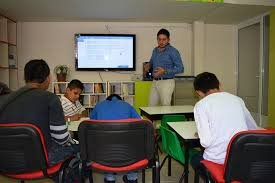
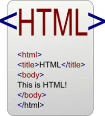

Introduccion

En esta pagina web (Proyecto) elaborada para la materia de Computacion Basica II de Centro de Estudios Cientificos y Tecnologicos No. 3 "Estanislao Ramirez Ruiz" tiene la finalidad de mostrar a los alumnos, profesores y publico en general algunas practivas elaboradas por los grupos a cargo de la profesora Naxhiel Wendoline Sandoval durante el curso de Computacion Basica II, y conocer mas de cerca los codigos HTML correspondientes a la unidad 2 de dicho curso, antes de comenzar a leer le sugerimos checar una por una las practicas y al final presionar la imagen de arriba (El 2 con Hello Kitty) para mas informacion de contacto con el creador, esperando que usted lector disfrute de el contenido en general de la pagina y de esta forma sea de ulitidad para su vida diaria, academica y profecional.
Saludos.
Unidad 2: Creacion de paginas Web.

Elabora paginas WEB a traves del codigo HTML y El Editor Institucional.Identifica los elementos que componen la estructura de una pagina WEB de acuerdo a su uso y funcion. Crea paginas WEB a traves del codigo HTML. Crea paginas WEB por medio del editor Institucional
Criterios de Evaluacion.
| Usa las etiquetas del codigo para crear la estructura de la pagina que servira como portada. | Usa el editor para generar las paginas que contengan la informacion que daran respuesta a la problema dada. | Usa el codigo y el editor para:
|
Utiliza el procedimiento para publicar las paginas web haciendo uso de las tecnologias de la informacion y la comunicacion de manera comprometida y respetuosa |
|---|---|---|---|
Definiciones Basicas.
- Pagina Web
- Una pagina web, o pagina electronica, pagina digital, o ciberpagina es un documento o informacion electronica capaz de contener texto, sonido, video, programas, enlaces, imagenes y muchas otras cosas, adaptada para la llamada World Wide Web y que puede ser accedida mediante un navegador web.
- Sitio Web
- Un sitio web es una coleccion de paginas web relacionadas y comunes a un dominio de internet o subdominio en la World Wide Web dentro de Internet.
- HTML
- HTML, siglas en ingles de HyperText Markup Language, hace referencia al lenguaje de marcado para la elaboracion de paginas web.
- WWW
- En informatica, la World Wide Web o red informatica mundial es un sistema de distribucion de documentos de hipertexto o hipermedia interconectados y accesibles a traves de Internet.
- HTTP
- Un servidor web o servidor HTTP es un programa informatico que procesa una aplicacion del lado del servidor, realizando conexiones bidireccionales o unidireccionales y sincronas o asincronas con el cliente y generando o cediendo una respuesta en cualquier lenguaje o aplicacion del lado del cliente.
- URL
- Un localizador de recursos uniforme es un identificador de recursos uniforme cuyos recursos referidos pueden cambiar, esto es, la direccion puede apuntar a recursos variables en el tiempo.
- FTP
- El Protocolo de transferencia de archivos es un protocolo de red para la transferencia de archivos entre sistemas conectados a una red TCP, basado en la arquitectura cliente-servidor.
Terminos de la unidad
Elaborado por:Garcia Garcia Miguel Eduardo.